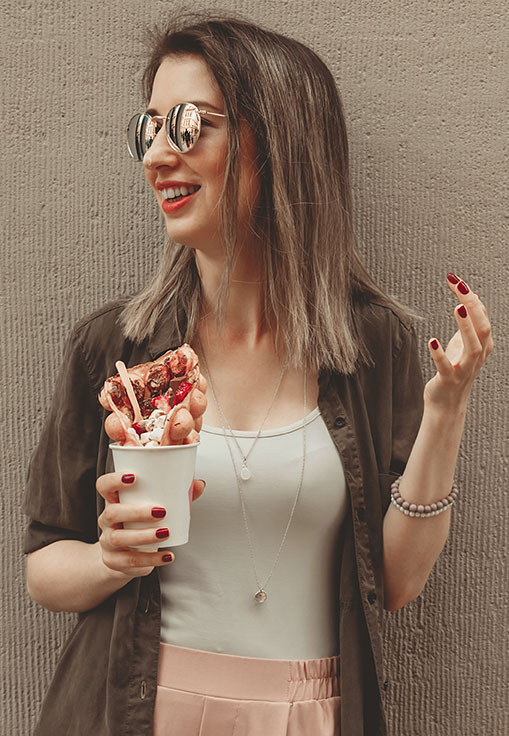

The Design Problem: Be the first to bring a global food trend to Waikiki
I was asked to develop the opening website for the first Bubble Waffle shop located in Waikiki, Hawaii. Being the first bubble waffle shop in the area creates a unique challenge to be visible to tourists who know the product, and to educate the local market to the product.
Case Background
Hong Kong-style waffles matched with locally made and inspired ice cream topped with multiple treats are the perfect snack and dessert option for Waikiki. Bubble waffles are the hottest trend in the UK and Australia, and are beginning to appear in US markets.
There are over 7.7 million tourists a year. Every day 100,000 plus tourists are looking for options that are convenient, affordable, and delicious.
